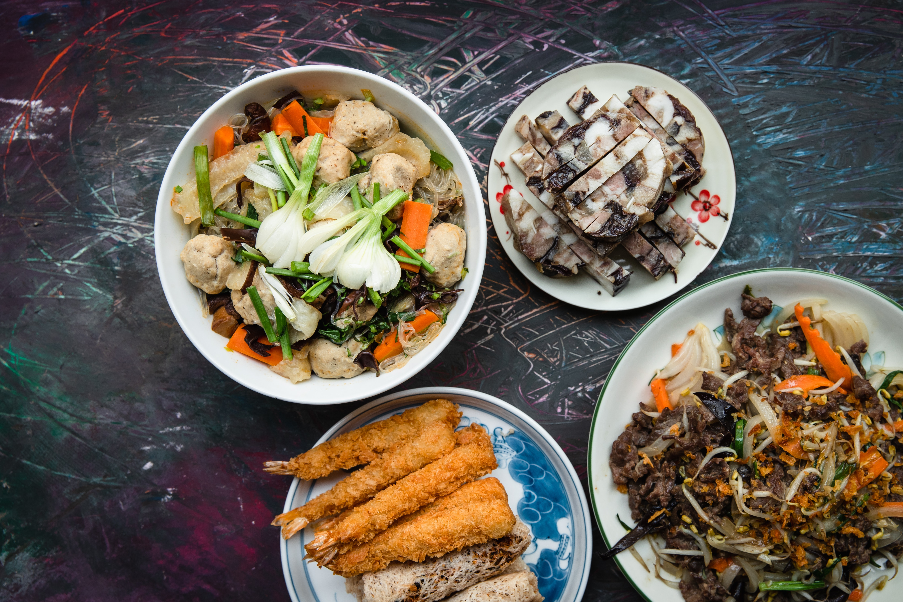

I was born in Vietnam, 1998. Most of my childhood up until high school was spent in this lovely homecountry. To my surprise, back then I had never thought of travel so far outside of it and I am now happy that I made this that decision. Study abroad has given me not only knowledge but also showed my many other aspect of life.
Irrelvantly, I have a second passion and that is cooking. Believe it or not, I was the head cook of my family. Part of this passion comes from the realization of similarity between data analytics and cooking. Both is a meticulous process of changing raw input into something useful, insightful and delicious. The part I love the most of them is when I could show the audiences, the customers how good is my end product by work out my best in each step of preparing and processing. Second is the never ending possibility for creativity. In both data analytics and cooking, I could try new combination, new methods, applications, and techniques to achieve a better or even a completely new output.
Thank you for reading.